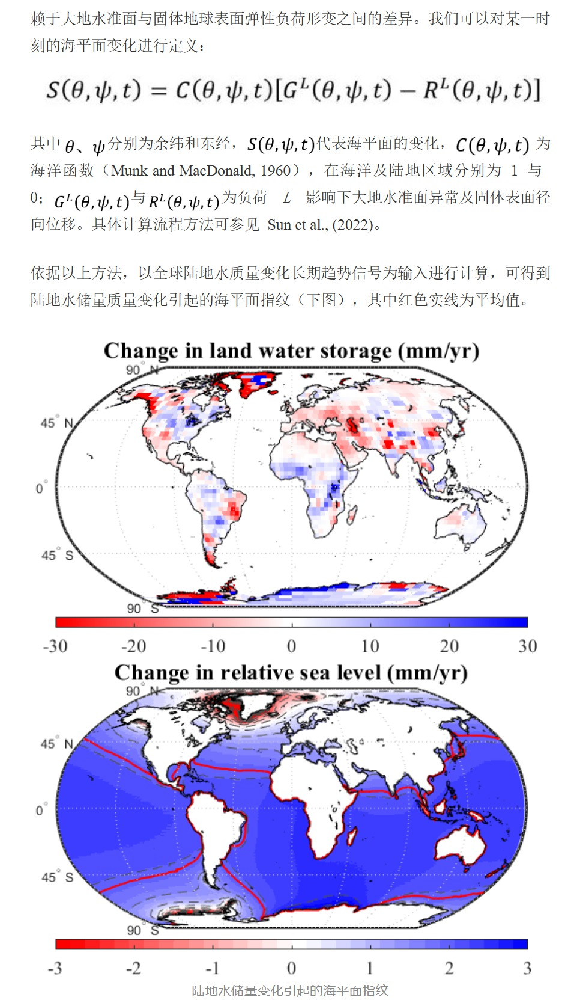
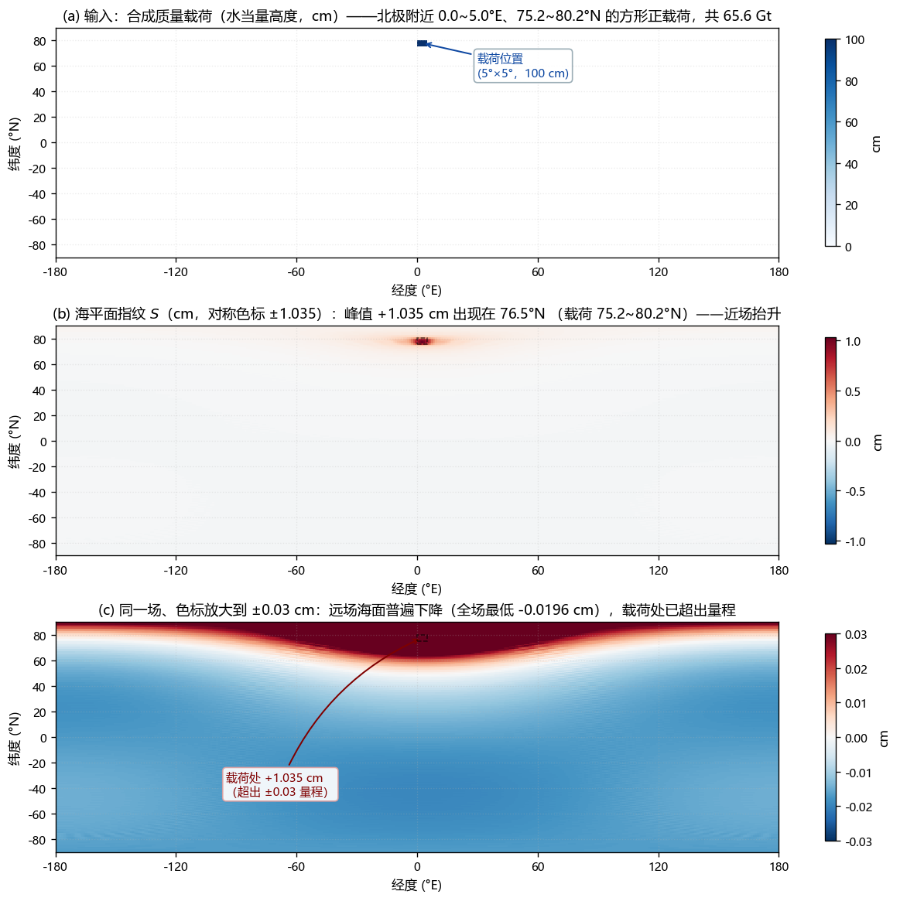
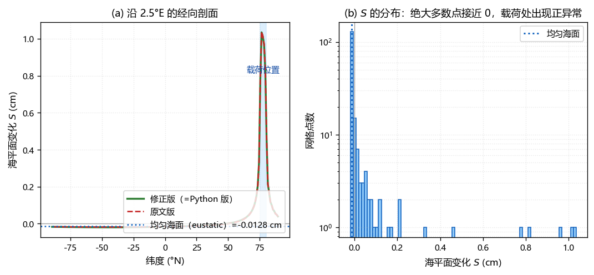
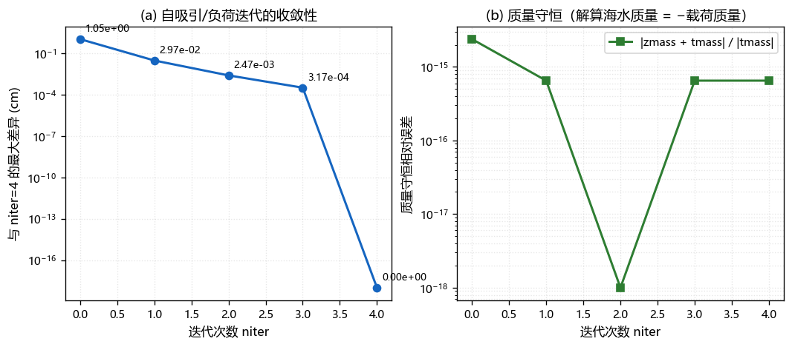
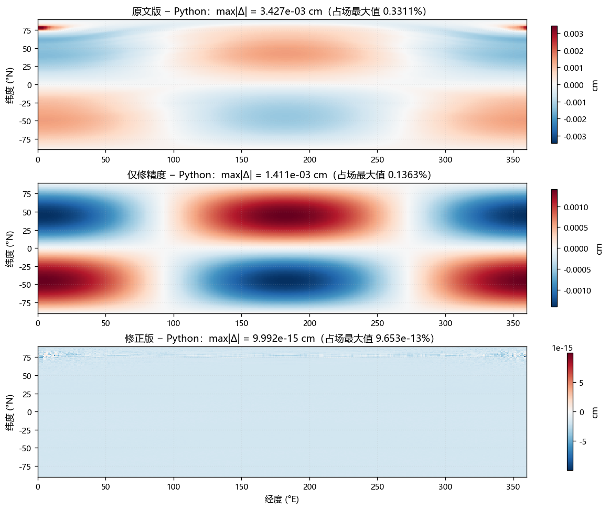
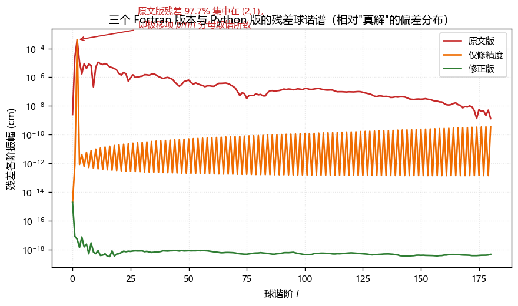
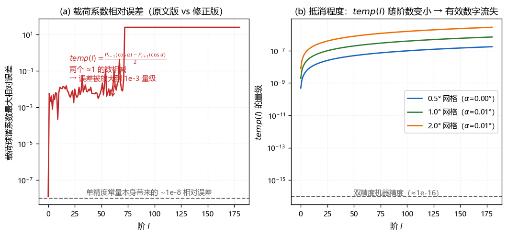

1 摘要：一页看懂
本报告系统总结了海平面指纹（SLF）的物理背景、数学原理、数值算法，以及同一算法 Fortran与 Python 两套实现的完整对比验证过程。核心结论如下：
最大差异（机器精度）
（同一 E12.4 格式）
缺陷（已定位、已修正、已量化）
（最大 3.43e-03 cm）
三个缺陷是本次验证最实质的产出，它们都不影响算法的正确性，但会污染数值结果或妨碍使用：
| 编号 | 缺陷 | 对最终海平面指纹的影响（实测） |
|---|---|---|
| 缺陷 1 | 字面常量被截断为单精度（1./sqrt(2.)、sqrt(2.0)、3./5.517、6.371E3**2、pi=3.14159265 等），经 gdisc 中
$temp(l)=\frac{P_{l-1}(\cos\alpha)-P_{l+1}(\cos\alpha)}{2}$ 的灾难性抵消放大 10⁵ 倍 |
3.98e-03 cm（占场最大值 0.38 %） 单胞球谐系数误差 0.3 %~0.6 % |
| 缺陷 2 | pmh 一行引用了已失效的循环变量 l（循环结束后 = 181），
分母变成 363 而非应有的 5，极移反馈被削弱约 72 倍 |
1.41e-03 cm（占 0.14 %） 残差功率 97.7 % 集中在 (l,m)=(2,1) |
| 缺陷 3 | 输出文件 Open(20, File=nameout) 未指定 Status，
gfortran 对已存在的文件按只读打开，第二次运行必然崩溃 |
不影响数值，但导致无法重复运行 报错：Cannot write to file opened for READ |
修正版做了什么
在不改动任何公式与算法的前提下：① 把受影响的字面常量提升为双精度（加 D0／改用 dsqrt、dfloat）；
② 把 pmh 分母写死为 float(2*2+1)；③ 输出文件用 Status='replace'，输入文件用 Status='old'；
④ 增加输入文件存在性检查（避免双击运行闪退）。修正后与 Python 版逐字节一致。
2 研究背景与意义
2.1 什么是海平面指纹
海洋、陆地及大气三者之间在全球范围内的水体交换，将导致水质量不均匀地重新分配；伴随冰川均衡调整（GIA）， 会激发固体地球的弹性与黏弹性响应，继而造成全球海平面呈现出空间差异，具有典型的区域性特征， 即海平面指纹（Sea Level Fingerprints, SLF）。
早在 19 世纪学者们就意识到这种指纹效应，并给出了最基本的物理解释。近些年来，随着冰盖冰川整体消融的加速， 主要受这些因素驱动的海平面指纹逐渐成为区域海平面的主要表征形式。因此，在研究海洋问题时，考虑海平面指纹的影响变得愈发重要。
为什么必须考虑指纹效应
- 研究大洋间水体质量交换时，海平面指纹的差异可能导致估算的海水迁移质量改变一半左右（Hsu and Velicogna, 2017）；
- 利用卫星测高和卫星重力数据更精准地监测格陵兰及南极冰盖消融、区域乃至全球海平面变化， 考虑海平面指纹的渗透影响是其中的关键（Adhikari et al., 2019; Pfeffer et al., 2018; Wang et al., 2018）；
- 海洋区域气候事件追踪（Pico et al., 2020）、GIA 探究（Simon et al., 2018）、潮汐监测（Ross et al., 2017）、 大地震对海洋质量变化的影响（Tang et al., 2020）等问题中，海平面指纹都是需要重点关注的因素。
2.2 原文结果图

可见指纹的量级（±3 mm/yr）比陆地水储量变化本身小一个数量级，且空间分布并非均匀升降， 而是与载荷位置相关的区域性图案——这正是"指纹"一词的来源。
3 物理原理与数学公式
3.1 海平面方程
计算海平面指纹需要借助海平面方程。在只考虑弹性响应影响下，计算主要依赖于 大地水准面与固体地球表面弹性负荷形变之间的差异。某一时刻的海平面变化定义为：
$$S(\theta,\psi,t) = C(\theta,\psi,t)\left[\,G^{L}(\theta,\psi,t) - R^{L}(\theta,\psi,t)\,\right]$$其中：
- $\theta$、$\psi$ —— 分别为余纬和东经；
- $S(\theta,\psi,t)$ —— 代表海平面的变化；
- $C(\theta,\psi,t)$ —— 海洋函数（Munk and MacDonald, 1960），在海洋及陆地区域分别为 1 与 0；
- $G^{L}(\theta,\psi,t)$ 与 $R^{L}(\theta,\psi,t)$ —— 负荷 $L$ 影响下大地水准面异常及固体表面径向位移。
具体计算流程方法可参见 Sun et al., (2022)。此外还需叠加一个 0 阶常数项以满足海水质量守恒
（全球海洋质量变化 = 陆地水质量变化的相反数），代码中即为迭代里不断修正的 amass。

3.2 球谐展开与斯托克斯系数
把 $S$、$G^{L}$、$R^{L}$、$C$ 在球面上按归一化球谐函数展开后，海平面方程变成对球谐系数的线性方程组。 设 $l$、$m$ 为阶与次，完全归一化（$\int \bar P_{lm}^2\,d\Omega = 4\pi$）的勒让德函数为 $\bar P_{lm}(\cos\theta)$，则
$$S(\theta,\psi,t)=\sum_{l=0}^{L}\sum_{m=0}^{l} \Big[\,C^{S}_{lm}\cos m\psi + S^{S}_{lm}\sin m\psi\,\Big]\bar P_{lm}(\cos\theta)$$任意网格函数 $f(\theta,\psi)$ 的斯托克斯系数由球面积分给出（对应子程序 geoid）：
数值实现采用中点求积：把上式离散为对经纬网格的双重求和， $d\theta=\pi/n_{th}$、$d\psi=2\pi/n_{phi}$ 为常数权重的面积因子，$\sin\theta$ 由余纬给出。
3.3 负荷勒夫数与"自吸引 + 负荷"系数
负荷 $L$ 引起的重力势、大地水准面异常与固体位移由负荷勒夫数 $h_l$、$k_l$ 联系。 对完全归一化的海洋自吸引 + 负荷项，代码中使用的两组系数为：
$$\mathrm{coefh}(l)=\big(1+k_l-h_l\big)\cdot\frac{3\rho_0}{\rho_{\mathrm{ave}}\,(2l+1)} \qquad\text{（海水自身负荷项，乘海面高度系数）}$$ $$\mathrm{coefp}(l)=\frac{1+k_l-h_l}{1+k_l}\qquad\text{（外部载荷项，乘载荷重力势系数）}$$其含义可以这样理解：$1+k_l$ 给出质量载荷导致的大地水准面响应，$h_l$ 给出固体表面径向位移， 两者之差 $1+k_l-h_l$ 正是海平面方程括号内的 $G^{L}-R^{L}$。
3.4 单个网格单元：均匀圆盘的解析系数
输入的质量变化按经纬网格给出。把每个网格单元视为一个均匀圆盘（角半径 $\alpha$），
其质量分布已知，可以用解析式直接给出斯托克斯系数（子程序 gdisc）。圆盘对 0 阶（轴对称）系数的贡献为
再乘上单元中心处的勒让德函数与方位角项，并计入负荷勒夫数与归一化水高 $h_a=h/a$：
$$C^{L}_{lm}\mathrel{+}= \frac{T_l}{2l+1}\,\bar P_{lm}(\cos\theta_0)\cos m\psi_0\cdot \frac{3}{\rho_{\mathrm{ave}}}\frac{1+k_l}{2l+1}\,h_a$$注：$h=\dfrac{m_{\text{cell}}}{\text{area}\cdot(10^5)^2}$（水高，cm），$h_a=h/a$（无量纲，$a=6.371\times10^8$ cm）。
关键数值性质：$T_l$ 是两个"≈1 的数"相减
网格单元的角半径很小（0.5° 网格约 $\alpha\approx0.1°$），此时 $\bar P_{l\pm1}(\cos\alpha)\approx 1-\mathcal{O}(l^2\alpha^2)$，于是 $T_l$ 的量级只有
$$T_l\;\approx\;\frac{(2l+1)\,\alpha^2}{4}\;\sim\;10^{-6}\ldots10^{-4}\quad(l\lesssim180)$$也就是说，一次减法损失了 4~5 位有效数字。若 $\bar P$ 本身只有单精度精度（$\sim10^{-8}$ 相对误差）， $T_l$ 的相对误差就会被放大到 $10^{-3}$ 量级——这正是缺陷 1 的机理（详见第 7 节与图 8）。
3.5 归一化勒让德函数的 Martin 递推
子程序 martin 用 Martin 递推关系计算完全归一化的 $\bar P_{lm}(x)$（$x=\cos\theta$）：对每个 $m$ 先取初值
再用关于 $k=l-m$ 的三项递推（$k\ge1$）：
$$p_k = 2x\,p_{k-1}\sqrt{1+\frac{m-\tfrac12}{k}}\;\sqrt{1-\frac{m-\tfrac12}{k+2m}} \;-\;p_{k-2}\sqrt{1+\frac{4}{2k+2m-3}}\;\sqrt{1-\frac1k}\;\sqrt{1-\frac{1}{k+2m}}$$ $$\bar P_{lm}(x)=(\sin\theta)^{m}\,p_{l-m}$$递推中的 $p_{k-2}$ 项仅在 $k>1$ 时使用（代码中用 If(k>1) 保护；gfortran 的 -Wdo-subscript
会对它误报越界，实测结果与解析值一致）。
3.6 质量守恒约束与迭代
海平面方程的解只有在满足海水质量守恒时才唯一。程序中把解写成"图案项 + 常数项"：
$$S = \underbrace{C\cdot\big[(G^{L}-R^{L})_{\text{载荷}} + (G^{L}-R^{L})_{\text{海水}}\big]}_{\text{球谐重构}} \;+\; \underbrace{c\cdot C}_{\text{0 阶常数}}$$其中常数项 $c$（代码中的 amass）由每一步重新计算，强制全球海洋质量变化等于载荷质量的相反数：
这里 $\int C\,d\Omega$（ocnint）是海洋面积对应的立体角，$m_{\text{total}}$（tmass）是载荷总质量。
由于 $S$ 又出现在右边（自吸引 + 负荷反馈），需要迭代求解——这就是代码中 niter 的含义：
niter = 0：不做迭代，等价于把水均匀铺在一层海面上（0 阶解）；niter = 2（默认）：迭代两次后自吸引/负荷项基本收敛（见图 5）；- 每一步迭代结束后，程序都会打印"解算海水质量"与"-载荷质量"，二者应相等（实测相对误差 $\le2\times10^{-15}$）。
3.7 极移（polar motion）反馈
海水质量的重新分布会改变地球的惯量张量，进而改变离心力位，反过来影响 $l=2,m=1$ 阶的海平面解。 代码用三条语句引入该反馈：
! //polar motion
coefpm = (1.+rk(2))*(1.+rk2b-h2b)/(rkf-rk2b)
pmp = (1.+rk(2)-h(2)+coefpm)/(1.+rk(2))
pmh = pmp*(1.+rk(2))*3.*rho0/rhoave/float(2*l+1) ! ← 原文此处 l 已失效（=181）在迭代中，$(l,m)=(2,1)$ 阶的系数被 pmh／pmp 替换。由于该项只作用于二阶一次项，
分母本应取 $2\times2+1=5$；原文因误用循环残留值只能取到 363，使反馈强度被削弱约 72 倍
（pmh 由 0.2667 变成 0.00367，而同一分支的 pmp 仍是放大后的 3.50，
形成"关掉一半"的不一致状态）。这就是缺陷 2。
4 算法流程与实现细节
4.1 整体流程
land.fcn.1_deg（海陆掩膜）、love_numbers（负荷勒夫数）、
Filelist.txt（输入/输出文件清单）、质量变化网格 经度 纬度 水当量高度(m)ofcn = 1 - ivalue）；读勒夫数 →
形成 coefh(l)、coefp(l)；计算极移系数 coefpm/pmp/pmhgdisc）累加
载荷的重力势球谐系数 synthc/synths，同时累加总质量 tmassmartin 递推算 $\bar P_{lm}(\cos\theta_j)$ 与 $\cos m\psi_i$、$\sin m\psi_i$；
由 geoid 积分求海洋面积 ocnintniter 次）：a. 用 $C\big[\mathrm{coefh}\cdot S + \mathrm{coefp}\cdot(G^L-R^L)_{\text{载荷}}\big]$ 重构海面高度； $(2,1)$ 阶改用
pmh/pmp；b.
geoid 求 0 阶项 → 更新常数 amass 以保证质量守恒；c. 叠加常数项，并由
geoid 重新求海面高度的球谐系数 ← 收敛判据来自自吸引反馈4.2 子程序职责与对应关系
| Fortran | Python | 职责 | 复杂度 |
|---|---|---|---|
Program sleqn | run() / solve_one() |
主流程：读文件、逐文件求解、写结果、打印质量自检 | — |
Subroutine martin | martin() |
Martin 递推求归一化勒让德函数 $\bar P_{lm}(x)$ | $\mathcal{O}(L^2)$／纬度 |
Subroutine geoid | geoid() |
对 $\theta,\psi$ 积分求斯托克斯系数（中点求积） | $\mathcal{O}(n_\phi n_\theta L^2)$ |
Subroutine gdisc | gdisc() |
均匀圆盘的斯托克斯系数（单网格单元的解析贡献） | $\mathcal{O}(L^2)$／单元 |
4.3 数组规模与内存
| 数组 | 维度 | 元素数 | 内存 (float64) | 说明 |
|---|---|---|---|---|
plm | (181, 181, 180) | 5.90 M | 47 MB | 全部纬度上的勒让德函数 |
plm1（geoid 内） | (181, 181, 180) | 5.90 M | 47 MB | 乘上 $\sin\theta\,d\theta\,d\psi$ 后的副本 |
synthc/synths | (181, 181) ×2 | 65 k | 0.5 MB | 载荷重力势球谐系数 |
total/ofcn | (360, 180) ×2 | 130 k | 1.0 MB | 海面高度／海洋函数网格 |
Fortran 中这些常量边界的局部数组被编译器放入静态存储（gfortran 会给出 "-Wsurprising: moved from stack to static storage" 提示，单线程使用无影响）。
4.4 实测性能
| 实现 | 本算例耗时 | 关键实现 |
|---|---|---|
Fortran（-O2 -static） | ≈ 9.4 s | 标量三重循环（i、l,m、j），每次内层循环做一次乘加 |
| Python（NumPy 2.4.6） | ≈ 5.8 s | 把 $(l,m)$ 求和写成矩阵乘 Tl @ plm[l,:l+1,:]，由 BLAS 以向量化方式完成；
geoid 的经度求和用 einsum |
有意思的是 Python 版反而更快：算法瓶颈是从 $(l,m)$ 系数到 $(i,j)$ 网格的"谐波合成"，
NumPy 把它交给了高度优化的 BLAS 矩阵乘，而 Fortran 原文是逐点标量循环。若把 Fortran 的
内层循环也改写成矩阵乘（或加 -O3 -march=native），性能可以再提升一个量级。
5 代码介绍：Fortran 版与 Python 版
5.1 文件清单
| 文件 | 说明 |
|---|---|
sleqn.f90 | 原文版：与文章所给代码逐行一致（原文注释全部保留，
另加 ★ 提示注释与输出单元的 Close）；仅把原文所有单词粘连处按 Fortran 语法还原 |
sleqn_dp.f90 | 修正版（推荐实际使用）：算法与公式完全未动， 修正第 7 节的 3 处缺陷，并增加输入文件检查 |
sleqn.py | Python/NumPy 版：与修正版数值一致（逐字节相同），
支持 --mask/--love/--list/--niter/--fmt 参数 |
sleqn_gui.py | PySide6 图形界面：输入文件选择、参数设置、后台计算（进度/取消/日志）、全球指纹图（等经纬 / Robinson 投影，三种色标模式）、剖面、统计与质量守恒自检 |
sleqn_static.exesleqn_dp_static.exe |
由上述两个源文件静态编译的 Windows 单文件程序（不依赖 MinGW 运行库 DLL） |
双击运行演示.batdemo\运行_修正版.bat、demo\运行_原文版.bat |
启动器：自动切到程序所在目录、清理旧结果、运行并 pause，避免"窗口一闪而过" |
selftest_sleqn.py | 7 项数值自检脚本 |
make_demo_data.py | 生成合成演示数据（无网盘数据时先跑通流程） |
make_report_figs.py | 生成本报告全部配图（含三版本对照、残差分析、收敛性） |
README_sleqn.md | 使用说明：输入输出格式、参数、编译验证与偏差归因 |
5.2 Fortran 版结构
原文代码是一个主程序 + 三个子程序的经典结构，全部使用隐式双精度声明
Implicit Real*8 (A-H, O-Z)（因此 i-n 为整型、其余为双精度）：
Program sleqn
Parameter (lmost=180, lsyn=lmost, llove=lmost, nth=180, nphi=360, niter=2)
Implicit Real*8 (A-H, O-Z)
! ① 读掩膜 → ofcn ② 读勒夫数 → coefh/coefp ③ 读 Filelist 逐文件处理
! ④ 逐单元 gdisc 累加 synthc/synths ⑤ martin 求勒让德函数
! ⑥ geoid 求 ocnint/amass → 迭代 niter 次 → ⑦ 输出网格
End Program sleqn
Subroutine martin(lmax, x, plm, ptemp) ! 归一化勒让德函数（Martin 递推）
Subroutine geoid(dens, rlon, rlat, plm, ccos, ssin, nth, nphi, lmost, lmax, clm1, slm1)
! 网格 → 斯托克斯系数（中点求积）
Subroutine gdisc(rlon, rlat, area, rmass, clm1, slm1, lmost, rk)
! 均匀圆盘的解析斯托克斯系数核心迭代（原文写法，未改动）：
Do n = 1, niter
Do i = 1, nphi
Do l = 0, lmax
Do m = 0, l
temp = coefh(l)*(hclm(l,m)*ccos(m,i) + hslm(l,m)*ssin(m,i)) &
+ coefp(l)*(synthc(l,m)*ccos(m,i) + synths(l,m)*ssin(m,i))
If((l==2) .And. (m==1)) Then ! //polar motion//
temp = pmh*(hclm(l,m)*ccos(m,i) + hslm(l,m)*ssin(m,i)) &
+ pmp*(synthc(l,m)*ccos(m,i) + synths(l,m)*ssin(m,i))
EndIf
Do j = 1, nth
total(i,j) = total(i,j) + temp*plm(l,m,j)*ofcn(i,j)
End Do
End Do
End Do
End Do
Call geoid(total, ..., 0, clm1, slm1) ! 0 阶项 → 质量守恒常数
amass = (-tmass/rho0/arad**2-rint)/ocnint
total = total + amass*ofcn
Call geoid(total, ..., lmax, hclm, hslm) ! 更新海面高度系数
End Do5.3 Python 版结构
Python 版保持与 Fortran 逐行对应的变量命名与数组约定（ofcn(i,j) →
ofcn[i,j]，纬度索引 j 为第二维），只在两处做了向量化改造：
| 环节 | Fortran（标量循环） | Python（向量化） |
|---|---|---|
geoid 的经度求和 |
对每个 $(l,m)$ 逐点累加 dens(j,i)*ccos(m,j)*plm1(l,m,i) |
先做矩阵乘 A = dens.T @ ccos.T，再 einsum('lmi,im->lm', plm1, A)/(4π) |
| 迭代中的谐波合成 | 四重循环 i / l,m / j |
对每个 $l$ 构造矩阵 Tl(nphi, l+1)，累加 Tl @ plm[l,:l+1,:]，
循环结束后整体乘 ofcn |
命令行用法：
python sleqn.py --mask demo/land.fcn.1_deg --love demo/love_numbers \
--list demo/Filelist.txt --niter 2 --fmt e12.4
# --fmt e12.4（默认，与 Fortran 完全一致的 0.ddddE±ee 格式）
# --fmt e18.10 / e24.16（更高精度，做数值比对时用）Python 版额外做到的几件事
- 输出格式严格复刻 Fortran：
_fmt_fortran_e()实现0.ddddE±ee规则， 并正确处理"尾数四舍五入进位到 1.0000 时需重新归一"的边界（例如 0.1 必须写成0.1000E+00， 不能写成1.0000E-01）；自检第 7 项专门盯这类边界值。 - 输入检查：掩膜行数、勒夫数阶数不足、网格不规则等都会给出明确提示。
- 路径解析：相对路径先按当前目录找，找不到再按
Filelist.txt所在目录找。
6 试验设计与验证结果
6.1 试验设计
原文配套测试数据需从网盘下载，为便于验证与复现，本次采用合成算例：
- 海陆掩膜：全球皆为海洋（$C\equiv1$），使质量守恒可以严格核对；另可切换为"矩形合成大陆"；
- 负荷勒夫数：PREM 量级的平滑近似（$h_l$、$k_l$），仅用于保证算法路径完整；
- 质量载荷：北极附近 5°×5° 的方形"冰盖"，共 100 个 0.5° 网格单元，水当量 1 m， 总面积 6.556×10⁴ km²，总质量 65.50 Gt；
- 纵向对比：同一算例分别用 原文版仅修精度 修正版 三个 Fortran 版本 + Python 版各跑一遍，逐点比较。

注：(b)(c) 说明海平面指纹的动态范围很大（载荷处约为远场的 50 倍）， 单幅线性色标图无法同时展示近场与远场；只画 (b) 时会"只见正值"。
补充验证：指纹峰值为什么不在载荷几何中心？
本算例载荷跨 75.5~80.0°N，面积加权质量质心在 77.58°N，但指纹峰值出现在 76.5°N，偏南约 1.1°。为排除算错的可能，做了受控试验：
| 载荷 | 质量质心 | 指纹峰值 | 偏移 |
|---|---|---|---|
| 南半（75.5~77.5°N） | 76.46°N | 76.5°N | +0.04° |
| 北半（78.0~80.0°N） | 78.96°N | 78.5°N | −0.46° |
| 完整载荷（75.5~80.0°N） | 77.58°N | 76.5°N | −1.08° |
| 同形状载荷平移到 45°N（对照） | 45.21°N | 45.5°N | +0.29° |
| 单个 0.5° 格点（45.25 / 80.25 / 20.25 / −45.25°N） | = 载荷位置 | ±0.25° 内 | ≈ 0 |
结论：这是真实的物理效应，不是程序错误。半个载荷各自的峰值都落在自己的质心上； 但在 80°N 附近，网格单元面积（即每行质量）随纬度降低增大约 44%， 而“自吸引 + 负荷”的核函数非常尖锐（距峰值 2° 处已衰减到约 28%，等效衰减尺度约 1.5°），叠加后峰值被拉向质量更大的南缘。 对照试验印证了这一点——把同一块载荷平移到 45°N，该处 $\cos arphi$ 在载荷范围内几乎不变， 峰值便回到载荷中心。单格点试验还显示南北半球完全对称（峰值偏移 ±0.25°，即一个网格步长）， 说明余纬与勒让德函数的几何处理无误。
6.2 自检结果（7 项，全部通过）
| 编号 | 检验内容 | 结果 |
|---|---|---|
| 1 | 质量守恒：解算海水质量 = −载荷质量 | 相对误差 0 ~ 2×10⁻¹⁵（niter=0/2 及载荷加倍三种情形） |
| 2 | 线性性：载荷加倍 → 指纹加倍 | 相对偏差 0 |
| 3 | 迭代有效：niter=0 与 niter=2 的差异 | 最大 1.05 cm（自吸引/负荷项量级） |
| 4 | 指纹形态：载荷处抬升、远场下降 | 载荷处 +0.94 cm、对跖点 −0.018 cm；与圆盘解析粗估（1.25 cm）之比 0.75 |
| 5 | 输出网格顺序：$\int S\,d\Omega$ 应等于 $-m/(\rho a^2)$ | 相对误差 7.2×10⁻¹⁵（若误按纬度外层解读则偏差 16 %，说明该检验有效） |
| 6 | 输出格式与 Fortran F5.1,1X,F5.1,1X,E12.4 一致 | 行长 24、字段位置与尾数格式均符合 |
| 7 | E 格式边界值（0.1 等）符合 0.ddddE±ee 规则 | 14 个边界值全部通过 |

6.3 迭代收敛性

niter=4 解的最大差异：
$1.05\ \mathrm{cm}\to2.97\times10^{-2}\to2.47\times10^{-3}\to3.17\times10^{-4}$，
每次迭代约降一个量级，默认 niter=2 已足够（残差 ~2×10⁻³ cm，约为场最大值的 0.2 %）。
(b) 质量守恒相对误差始终在 $10^{-15}$ 量级（机器精度），与迭代次数无关——说明常数项 amass
的修正逻辑是严格成立的。7 发现的缺陷与修正（对比验证的核心产出）
把三个 Fortran 版本的高精度输出分别与 Python 版逐点相减，得到如下结果：
| Fortran 版本 | max|Δ| vs Python | 占场最大值（1.0351 cm） | 残差特征 |
|---|---|---|---|
原文版 sleqn.f90 | 3.427e-03 cm | 0.331 % | 97.7 % 的残差功率集中在 $(l,m)=(2,1)$ |
| 仅修精度（pmh 仍为原文写法） | 1.411e-03 cm | 0.136 % | 同样是 $(2,1)$ 形态 |
修正版 sleqn_dp.f90 | 9.992e-15 cm | ≈ 9.7e-13 % | 纯机器精度噪声 |
逐项隔离（两个 Fortran 输出直接相减）：
| 单独影响 | max|Δ| | 占比 |
|---|---|---|
| 缺陷 1（单精度常量）对最终海平面场 | 3.978e-03 cm | 0.38 % |
缺陷 2（pmh 分母）对最终海平面场 | 1.411e-03 cm | 0.14 % |

pmh 取错分母留下的痕迹；下图（修正版）只剩 10⁻¹⁵ 量级的均匀噪声。
7.1 缺陷 1：字面常量被截断成单精度
原文中以下常量因为没有 D0 后缀，在 Fortran 里属于默认单精度（REAL(4)）字面量，
会先被截断成 24 位尾数、再参与双精度运算：
1./sqrt(2.) sqrt(1.+1./2./float(j)) sqrt(2.) sqrt(2.0)
3./5.517 6.371E3**2 6.371E8 pi = 3.14159265
rhoave = 5.517 0.298 0.604 5.97E27单精度常量本身只带来 $\sim10^{-8}$ 的相对误差，看似无害。但在 gdisc 中：
temp(l) = (plmart(l-1,0) - plmart(l+1,0))/2. ! 两个 ≈1 的数相减因为单元角半径 $\alpha$ 极小，$temp(l)\sim10^{-6}\ldots10^{-4}$，相减损失 4~5 位有效数字， 于是 $10^{-8}$ 的输入误差被放大到 $10^{-3}$ —— 实测单个网格单元的球谐系数出现 0.3 %~0.6 % 的误差 （$l=1$ 约 0.6 %，$l=6$ 约 0.3 %）。全部 100 个单元的贡献累加后，最终海平面指纹场偏差达 3.98×10⁻³ cm（0.38 %）。

7.2 缺陷 2：pmh 分母引用了已失效的循环变量
Do l = 0, lsyn
Do m = 0, l
synthc(l,m) = 0. ...
End Do
End Do ! ← 循环结束后 l = lsyn+1 = 181
...
pmh = pmp*(1.+rk(2))*3.*rho0/rhoave/float(2*l+1) ! 分母 = 2*181+1 = 363 ≠ 5极移项只在 $(l,m)=(2,1)$ 处生效，其分母应为 $2\times2+1=5$。原文取到 363，
使 pmh 由应有的 0.2667 变成 0.00367，被削弱约 72 倍；而同一分支中的 pmp
（3.5037）仍然是放大后的正确值，于是该项处于"半开半关"的不一致状态。
实测对最终海平面场的影响为 1.41×10⁻³ cm（0.14 %）。
修正方式与替代方案
修正版把分母写死为 float(2*2+1)，并在该行加了 ★ 注释。若本来就不需要极移反馈，
也可以按原文注释把 coefpm/pmp/pmh 三行与迭代中的极移分支一起注释掉，
此时本缺陷不再有影响。
配套的 Python 版与图形界面已把极移反馈做成运行期开关
（GUI 左侧「含极移（Polar motion）反馈」复选框 / 命令行 --no-polar /
库调用 polar=False，默认开启），不需要该反馈时不必再改源码。
开关只作用于球谐 $(l,m)=(2,1)$，其独立验证见 _verify/verify_polar_switch.py
（差场 99.9999 % 的功率集中在 (2,1)；赤道对称载荷下开/关结果逐点相同）。
7.3 缺陷 3：输出文件未指定 Status，第二次运行必然崩溃
原文输出文件用 Open(20, File=nameout) 打开，未写 Status。
gfortran 对已存在的文件按只读方式打开，于是第一次运行正常、第二次运行直接报错退出：
| 输出文件状态 | 原文版运行结果 |
|---|---|
| 不存在（首次运行） | 正常运行输出 64800 行结果 |
| 已存在（重复运行） | 崩溃
Fortran runtime error: Cannot write to file opened for READ（退出码 2） |
修正版改为 Open(20, File=nameout, Status='replace')（输入文件相应改为 Status='old'），
可反复运行；配套的 .bat 启动器还会在运行前删除旧结果，双重保险。
7.4 其他需要注意的问题（原样保留，仅注释说明）
| 问题 | 说明 |
|---|---|
alpha = dcos(clat) 是死代码 |
clat 已经是角半径的余弦，这一行既不是角半径、其后也未被使用
（按原意应为 acos(clat)） |
| 载荷网格与掩膜网格分辨率不一致 | 主程序 dlon = dlat = 0.5（用于反算单元面积），而掩膜文件名是
land.fcn.1_deg（1°）。须与实际数据网格一致，否则单元面积差 4 倍 |
| 输出精度只有 4 位有效数字 | E12.4 在数值 ~1 cm 时分辨率仅 1e-3 cm，
小于约 1e-3 cm 的差异在输出文件里根本看不出来——这也是上述缺陷长期未被发现的原因之一。
做精度分析建议改用 E16.6 以上（Python 版用 --fmt e18.10） |
| 掩膜第 3 列必须是整数 | ivalue 因隐式类型规则是整型（字母 i 不在
Implicit Real*8(A-H,O-Z) 范围内），写成 0.0/1.0 会导致表控读入失败 |
-std=f95 无法编译 |
Real*8、Character*120 是各编译器通行扩展而非 F95 标准写法，
用默认标准或 -std=legacy 即可（本次用 gfortran 16.1.0 默认标准，零告警通过） |
| 参考文献（Munk and MacDonald, 1960） | 原文所给 DOI 指向 Geological Magazine 上的一则书评，而 The Rotation of the Earth 本身是 Cambridge University Press 出版的书，投稿前建议核对 |
7.5 逐字节级别的最终确认
把修正版 exe 与 Python 版都用同一个 E12.4 文本格式输出后逐行比较：
| 对比 | 总行数 | 不同行数 | 结论 |
|---|---|---|---|
sleqn_dp_static.exe vs python sleqn.py --fmt e12.4 |
64800 | 0 | 逐字节完全相同 |
sleqn_static.exe（原文版）vs 同上 |
64800 | 64303（99.23 %） | max|Δ| = 3.40e-03 cm，mean|Δ| = 5.81e-04 cm |
另外，对全部 16381 个载荷球谐系数做了对比：修正版 Fortran 与 Python 版的最大差异为 1.3×10⁻¹⁸（相当于双精度舍入误差）；而原文版相对修正版的最大相对误差达 $\sim10^{-3}$ 量级（缺陷 1）。
对比验证的结论
- Python 版与修正版 Fortran 是同一算法的两种实现：差异为机器精度（10⁻¹⁵ cm 级）， 文本输出逐字节相同；
- 原文版与它们相差 0.33 %，原因已完全归因到第 7.1、7.2 节两处数值缺陷， 而不是算法或公式差异；
- 除数值缺陷外，原文代码的骨架（海平面方程、球谐化、圆盘解析式、Martin 递推、 质量守恒迭代）经检验完全正确：质量守恒、线性性、网格顺序、 指纹形态与解析粗估均通过。
8 使用方法与参数说明
8.1 输入输出格式
| 文件 | 格式 | 备注 |
|---|---|---|
land.fcn.1_deg | 每行 经度 纬度 value，共 nth×nphi 行，
按纬度带排列（先一个纬度带的所有经度） |
value=1 陆地、0 海洋；必须整数、不能有注释行 |
love_numbers | 前 2 行表头（不解析），其后每行
l h_l k_l 保留列，共 181 行（l=0~180） |
必须是 4 列：Fortran 每次固定读 4 个数，列数不足会错位 |
Filelist.txt | 每行两个文件名：输入数据文件、输出结果文件 | 相对路径按当前工作目录解析（Fortran） |
| 质量变化数据 | 每行 经度 纬度 水当量高度(m) |
负值置 0；单元面积由 dlon/dlat 反算，须与数据网格一致 |
| 输出结果 | 每行 经度 纬度 海平面变化(cm)，共 nphi×nth 行 |
经度外层、纬度内层循环；默认 E12.4（仅 4 位有效数字） |
8.2 编译与运行
# ==== Fortran ====
gfortran -O2 -o sleqn_dp.exe sleqn_dp.f90 # 动态链接
gfortran -O2 -static -o sleqn_dp.exe sleqn_dp.f90 # 静态链接（推荐，便于分发）
# ==== Python ====
python make_demo_data.py --out demo # 生成合成演示数据
python sleqn.py --mask demo/land.fcn.1_deg --love demo/love_numbers \
--list demo/Filelist.txt --niter 2 --fmt e12.4为什么"双击 exe 打不开"？
程序按当前工作目录读取 land.fcn.1_deg、love_numbers、
Filelist.txt 与数据文件。双击 exe 时工作目录就是 exe 所在目录，若那里没有这些文件，
程序会立即报错退出、控制台窗口瞬间关闭，看起来就像"打不开"。三种解决办法：
- 把 exe 与数据文件放在同一个目录（本项目的
demo\就是这样组织的）； - 用配套的
.bat启动器（已自动cd到程序目录并pause保留窗口）； - 在命令行里先
cd到数据目录再运行 exe。
修正版已经内置了文件存在性检查，缺文件时会打印明确的错误提示而不再"闪退"。
运行时正常的浮点提示
stderr 会出现 IEEE_UNDERFLOW_FLAG IEEE_DENORMAL。这是极点附近
$(\sin\theta)^m$（$m$ 最大 180）下溢到非规格化数所致，属正常现象，不影响结果。
8.3 可调参数
| 位置（Fortran） | 默认 | 说明 |
|---|---|---|
Parameter (niter=…) | 2 | 迭代次数；0 = 不做自吸引迭代（水均匀铺一层） |
Parameter (lmost=…) | 180 | 最大阶数，须与勒夫数表最高阶一致 |
Parameter (nth, nphi) | 180, 360 | 格点数，须与掩膜、载荷网格一致 |
dlon, dlat | 0.5° | 载荷网格间隔，必须与实际数据一致 |
coefpm/pmp/pmh | 打开 | 不需要极移反馈时连同迭代中的极移分支一起注释掉；Python 版/GUI 为运行期开关（--no-polar / GUI 复选框），默认开启 |
22 Format | E12.4 | 输出精度，做精度分析建议改 E16.6 以上 |
9 结论与建议
- 算法正确、可用。原文代码实现了完整的海平面方程求解流程（圆盘解析谐波化 + Martin 递推 + 自吸引/负荷迭代 + 质量守恒约束），本次验证中的质量守恒、线性性、网格顺序、指纹形态与解析量级 检验全部通过。
- 存在 3 处需要修正的缺陷（单精度常量、
pmh分母、输出文件Status）， 其中前两处会让最终海平面指纹产生 0.1 %~0.4 % 的系统性偏差，第三处会让程序无法重复运行。 修正版sleqn_dp.f90在不改动任何公式的前提下全部解决。 - 两套实现互为验证。Fortran 修正版与 Python 版在 64800 个网格点上逐字节一致、 在 16381 个载荷球谐系数上差异 $\le1.3\times10^{-18}$，可以放心地相互替代或交叉核对。
- 建议：
- 发表/发行代码时使用
sleqn_dp.f90，并把输出精度提高到E16.6以上； - 用真实数据重跑时，注意两版结果会有 0.1 %~0.4 % 的差异，历史结果若基于原文版需要重新评估；
- 后续可考虑：把迭代内层循环改写为矩阵乘以提速、把 180 阶以上截断误差与勒夫数插值误差纳入误差预算。
- 发表/发行代码时使用
10 文件清单与参考文献
10.1 本次产出的文件
| 文件 | 内容 |
|---|---|
总结报告.html | 本报告（单文件，图片已内嵌，可直接分发/打印） |
总结报告_可编辑版.html | 本报告的轻量版：图片以相对路径引用 figs/，便于直接编辑 HTML 源码 |
html_inline_images.py | 把 <img src="figs/…"> 内嵌为 base64，用于从轻量版生成单文件版 |
figs/fig1…fig8 | 本报告全部配图的独立文件 |
sleqn.f90 / sleqn_dp.f90 | 原文版 / 修正版 Fortran 源码 |
sleqn.py | Python/NumPy 版源码 |
sleqn_gui.py双击运行GUI.bat | PySide6 图形界面：选文件→设参数→后台计算（带进度/可取消）→地图与剖面出图、统计与质量守恒自检 |
sleqn_static.exe / sleqn_dp_static.exe | 已编译好的 Windows 单文件程序 |
selftest_sleqn.py | 7 项数值自检 |
make_demo_data.py / demo/ | 合成演示数据生成器与数据 |
make_report_figs.py | 本报告配图的生成脚本（可复现） |
README_sleqn.md | 详细使用说明 |
海平面指纹_文章整理.md | 原文章节整理、公式补全与问题清单 |
10.2 复现本报告的全部结果
python make_demo_data.py --out demo # 1) 生成合成算例
python selftest_sleqn.py # 2) 7 项自检（含质量守恒、线性性、格式检查）
python make_report_figs.py # 3) 三版本对照 + 残差分析 + 全部配图
# 需要 gfortran 在 PATH 中（本次用 16.1.0）10.3 参考文献
- Adhikari, S., E. R. Ivins, T. Frederikse, F. W. Landerer, and L. Caron (2019), Sea-level fingerprints emergent from GRACE mission data, Earth System Science Data, 11(2), 629–646, doi:10.5194/essd-11-629-2019.
- Hsu, C. W., and I. Velicogna (2017), Detection of sea level fingerprints derived from GRACE gravity data, Geophysical Research Letters, 44(17), 8953–8961, doi:10.1002/2017gl074070.
- Munk, W. H., and G. J. F. MacDonald (1960), The Rotation of the Earth, Cambridge University Press.（原文所给 DOI 指向 Geological Magazine 98(4), 352–352 的书评）
- Pfeffer, J., P. Tregoning, A. Purcell, and M. Sambridge (2018), Multitechnique Assessment of the Interannual to Multidecadal Variability in Steric Sea Levels, Journal of Climate, 31(18), 7583–7597, doi:10.1175/JCLI-D-17-0679.1.
- Pico, T., J. X. Mitrovica, and A. C. Mix (2020), Sea level fingerprinting of the Bering Strait flooding history, Science Advances, 6(9), doi:10.1126/sciadv.aay2935.
- Ross, A. C., et al. (2017), Fingerprints of Sea Level Rise on Changing Tides in the Chesapeake and Delaware Bays, JGR-Oceans, 122(10), 8102–8125, doi:10.1002/2017jc012887.
- Simon, K. M., R. E. M. Riva, M. Kleinherenbrink, and T. Frederikse (2018), The GIA signal at present day in northern Europe and the British Isles, Solid Earth, 9(3), 777–795, doi:10.5194/se-9-777-2018.
- Sun J. W., Wang L. S., Peng Z. R., Fu Z. Y., and Chen C (2022). The sea level fingerprints of global terrestrial water storage changes detected by GRACE and GRACE-FO data, Pure and Applied Geophysics, 179(9).（本报告所述方法与代码的来源）
- Tang, L., et al. (2020), Seismic impact of large earthquakes on estimating global mean ocean mass change from GRACE, doi:10.3390/rs12060935.
- Wang, L., C. Chen, X. Ma, and J. DU (2018), Sea level fingerprints of ice sheet melting and its impacts on monitoring results of GRACE, Chinese Journal of Geophysics, 61(7), 2679–2690.
报告生成：由本项目脚本与实测数据自动汇总；所有数值均为本机实测（gfortran 16.1.0 / MinGW-w64 UCRT， Python 3.14.6 + NumPy 2.4.6 + matplotlib 3.11.1），可在本机用第 10.2 节的命令复现。